Whole brain Co-expression
For manuscript: Neurogenomic landscape of male cooperative behavior in a wild bird
Last Substantive Change December 2023
Last Knit “2023-12-19”
FALSE Allowing parallel execution with up to 7 working processes.In Horton et al (2020), they identified bunches of genes with similar expression patterns (co-expression modules) that aligned with differences among brain nuclei. The co-expression analysis here (using WGCNA), has two aims:
Replicate the results of Horton et al (2020)
To identify if there are co-expression modules that are shared amongst brain regions that are associated with our traits of interest.
This second aim is in part a complement to the whole brain PCA analysis done in the DESeq2 document.
1 Data Quality Control
This is where I originally ran the test on the effect of batch
correction on the whole brain dataset (now also presented in the DESeq2
document). As identified in that document and the QC process,
PFT2_POM sample was removed from this analysis.
1.1 Connectivity Test for Outliers
FALSE Flagging genes and samples with too many missing values...
FALSE ..step 1FALSE [1] TRUE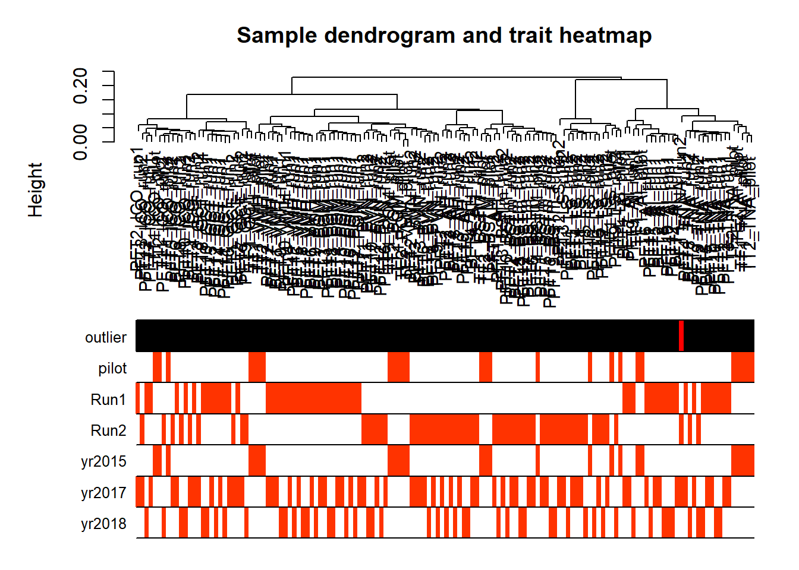
1.2 Effect of Batch Correction

FALSE [1] "Batch"
FALSE [1] "Status"
The analysis above also suggests PFT1_TNA_run2 is an outlier, based on the connectivity to the remainder of the analysis. PFT1_TNA_run2 is still an outlier when I exclude it from the smaller dataset that exludes the pilot samples (not shown). Therefore, I have excuded it below.
What do the data look like without the pilot samples (Horton et al 2020) and batch correction? Here I rerun the same analyses as above but excluding the batch correction and without the pilot samples.
1.3 Removing the pilot data

1.3.1 Batch Effect Correction
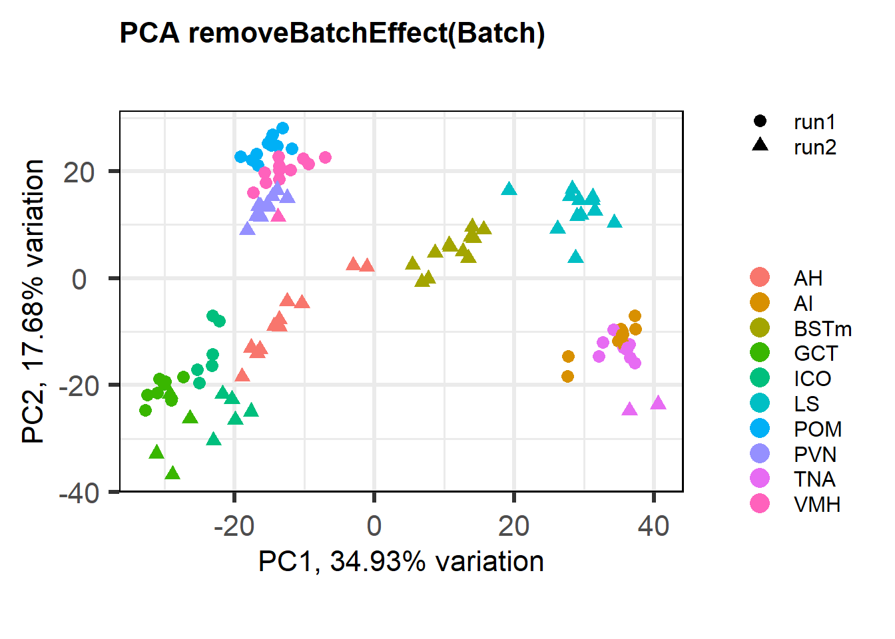
FALSE [1] "Batch"
FALSE [1] "Tissue"
FALSE [1] "Status"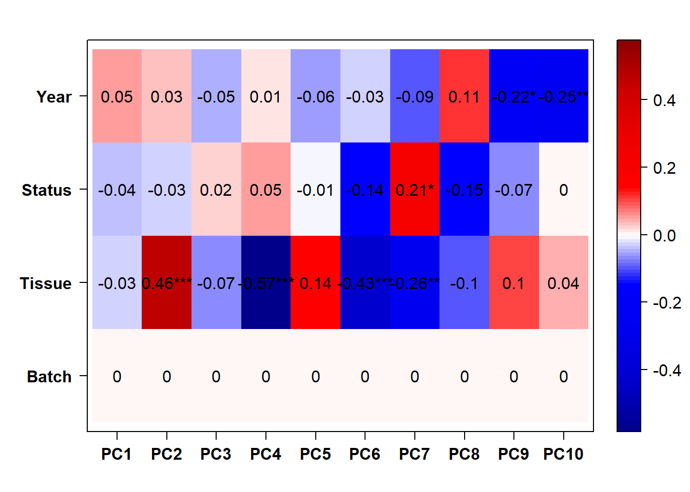
The PCA plot without batch correction still shows that tissues (and different batches) are clustered more closely. Perhaps in part this is still because batches are not evenly distributed across tissues.
Going forward with the WGCNA analysis on all brain samples, I will exclude pilot data and I will not conduct batch correction. However, I will include a batch variable in the trait-module correlation matrix.
2 WGCNA Analysis
Using the dataset without the pilot data and the two outliers
PFT2_POM_run1 and PFT1_TNA_run2, I will now
commence the main co-expression analysis.
datExpr0<- as.data.frame(t(vsd_data))
#write.csv(datExpr0, file="wholebrain_vsd_nobatchrm.csv")
gsg = goodSamplesGenes(datExpr0, verbose = 3)FALSE Flagging genes and samples with too many missing values...
FALSE ..step 1FALSE [1] TRUE2.1 Soft Threshold Selection
FALSE Power SFT.R.sq slope truncated.R.sq mean.k. median.k. max.k.
FALSE 1 1 0.128 108.00 0.968 6810.00 6810.00 6870.0
FALSE 2 2 0.174 -9.19 0.893 3720.00 3710.00 4120.0
FALSE 3 3 0.111 -2.24 0.923 2170.00 2160.00 2750.0
FALSE 4 4 0.208 -1.89 0.945 1340.00 1320.00 2010.0
FALSE 5 5 0.343 -1.81 0.966 868.00 846.00 1540.0
FALSE 6 6 0.456 -1.74 0.978 584.00 559.00 1220.0
FALSE 7 7 0.558 -1.72 0.984 407.00 380.00 997.0
FALSE 8 8 0.641 -1.77 0.984 291.00 264.00 831.0
FALSE 9 9 0.695 -1.81 0.979 214.00 188.00 705.0
FALSE 10 10 0.734 -1.82 0.980 161.00 135.00 606.0
FALSE 11 11 0.757 -1.85 0.975 123.00 99.40 526.0
FALSE 12 12 0.784 -1.87 0.976 95.80 73.80 462.0
FALSE 13 14 0.821 -1.90 0.981 60.70 41.90 364.0
FALSE 14 16 0.845 -1.90 0.985 40.30 24.70 294.0
FALSE 15 18 0.859 -1.93 0.985 27.80 15.00 243.0
FALSE 16 20 0.873 -1.92 0.987 19.90 9.39 203.0
FALSE 17 22 0.870 -1.94 0.981 14.60 6.00 172.0
FALSE 18 24 0.876 -1.93 0.983 10.90 3.91 148.0
FALSE 19 26 0.883 -1.91 0.983 8.36 2.60 128.0
FALSE 20 28 0.884 -1.90 0.984 6.50 1.75 112.0
FALSE 21 30 0.885 -1.88 0.986 5.14 1.20 98.7
Seems like there is no strong effect on Scale Free Topology The soft-threshold power I have selected here is 20, after which there is little improvement in the Scale free topology fit.
Going forward I will just use the pilot batch free data to be safe, given this was the stronger of the batch effects.
2.2 Adjacency and Topological Overlap matrices
The adjacency matrix and Topological Overlap was made on an external server to save my PC some RAMs.
softPower=20
#datExpr0<- read.csv("../WGCNA_results/all_brain/wholebrain_vsd_nobatchrm.csv")
#rownames(datExpr0)<- datExpr0$X
#datExpr0$X<- NULL
adjacency<- adjacency(datExpr0, power = softPower, type="signed")
TOM<- TOMsimilarity(adjacency, TOMType="signed")
#dissTOM<- 1-TOM
save(adjacency, TOM, file="../WGCNA_results/all_brain/wholebrain_network2023.RData")2.3 Identify co-expression modules
The first step is to identify modules of genes with similar gene expression. Basically, the tool creates a hierarchical clustering of the topological dissimilarity between genes.
#write.csv(datExpr0,file="../WGCNA_results/all_brain/wholebrain_vsd_nobatchrm.csv")
#for the rmarkdown knit this data is already loaded above.
#datExpr0<- read.csv("../WGCNA_results/all_brain/wholebrain_vsd_nobatchrm.csv")
#rownames(datExpr0)<- datExpr0$X
#datExpr0$X<- NULL
load("../WGCNA_results/all_brain/wholebrain_network2023.RData")
dissTOM<- 1-TOM
geneTree= flashClust(as.dist(dissTOM), method="average")
#plot(geneTree, xlab="", sub="", main= "Gene Clustering on TOM-based dissimilarity", labels= FALSE, hang=0.04)
minModuleSize<-30
dynamicMods<-cutreeDynamic(dendro= geneTree, distM= dissTOM, deepSplit=2, pamRespectsDendro= FALSE, minClusterSize= minModuleSize)FALSE ..cutHeight not given, setting it to 0.998 ===> 99% of the (truncated) height range in dendro.
FALSE ..done.#table(dynamicMods)
dynamicColors= labels2colors(dynamicMods)
plotDendroAndColors(geneTree, dynamicColors, "Dynamic Tree Cut", dendroLabels= FALSE, hang=0.03, addGuide= TRUE, guideHang= 0.05, main= "Gene dendrogram and module colors")
Now we try to merge some of these modules that are particularly similar in expression based on a similarity threshold.
#-----Merge modules whose expression profiles are very similar
MEList= moduleEigengenes(datExpr0, colors= dynamicColors)
MEs= MEList$eigengenes
#Calculate dissimilarity of module eigenegenes
MEDiss= 1-cor(MEs)
#Cluster module eigengenes
METree= flashClust(as.dist(MEDiss), method= "average")
#plot(METree, main= "Clustering of module eigengenes", xlab= "", sub= "")
MEDissThres= 0.30 # i.e. merge modules with an r2 > 0.90. This is stringent, could relax to reduce number of modules and increase module size.
#abline(h=MEDissThres, col="red")
merge= mergeCloseModules(datExpr0, dynamicColors, cutHeight= MEDissThres, verbose =3)FALSE mergeCloseModules: Merging modules whose distance is less than 0.3
FALSE multiSetMEs: Calculating module MEs.
FALSE Working on set 1 ...
FALSE moduleEigengenes: Calculating 61 module eigengenes in given set.
FALSE multiSetMEs: Calculating module MEs.
FALSE Working on set 1 ...
FALSE moduleEigengenes: Calculating 27 module eigengenes in given set.
FALSE multiSetMEs: Calculating module MEs.
FALSE Working on set 1 ...
FALSE moduleEigengenes: Calculating 22 module eigengenes in given set.
FALSE Calculating new MEs...
FALSE multiSetMEs: Calculating module MEs.
FALSE Working on set 1 ...
FALSE moduleEigengenes: Calculating 22 module eigengenes in given set.mergedColors=merge$colors
mergedMEs= merge$newMEs
plotDendroAndColors(geneTree, cbind(dynamicColors, mergedColors), c("Dynamic Tree Cut", "Merged dynamic"), dendroLabels= FALSE, hang=0.03, addGuide= TRUE, guideHang=0.05)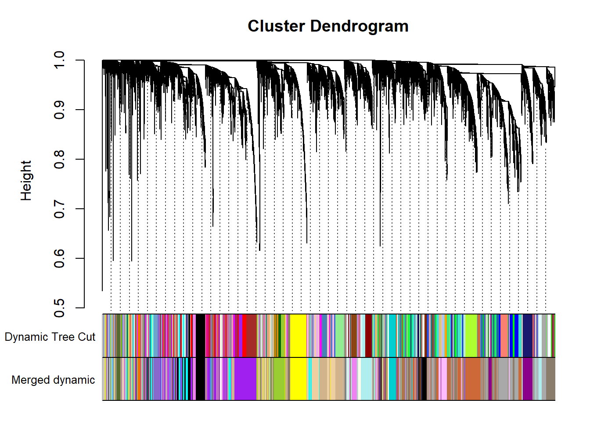
moduleColors= mergedColors
colorOrder= c("grey", standardColors(50))
moduleLabels= match(moduleColors, colorOrder)-1
MEs=mergedMEs2.4 Module-trait correlation
Correlate the eigenvector of each of the 22 co-expression modules with brain regions, individual and batch, as well as our interest variables (mean testosterone, status, and social network strength)
FALSE [1] TRUEdatTraits$Batch<- ifelse(grepl("run1",datTraits$sampleID), 1,0)
datTraits$Year<- as.numeric(as.factor(datTraits$Year))
datTraits$Ai<- ifelse(grepl("AI", datTraits$sampleID), 1,0)
datTraits$TnA<- ifelse(grepl("TNA", datTraits$sampleID), 1,0)
datTraits$BSTm<- ifelse(grepl("BST", datTraits$sampleID), 1,0)
datTraits$ICO<- ifelse(grepl("ICO", datTraits$sampleID), 1,0)
datTraits$GCT<- ifelse(grepl("GCT", datTraits$sampleID), 1,0)
datTraits$LS<- ifelse(grepl("LS", datTraits$sampleID), 1,0)
datTraits$POM<- ifelse(grepl("POM", datTraits$sampleID), 1,0)
datTraits$VMH<- ifelse(grepl("VMH", datTraits$sampleID), 1,0)
datTraits$AH<- ifelse(grepl("AH", datTraits$sampleID), 1,0)
datTraits$PVN<- ifelse(grepl("PVN", datTraits$sampleID), 1,0)
datTraits$Bird<- as.numeric(as.factor(datTraits$sampleID))
datTraits$Status2<- as.numeric(ifelse(datTraits$Status=="territorial",1,0))
datTraits<- subset(datTraits, select=c("Bird","Batch","Year","Status2", "mean_T","strength.all_study","VMH","AH","PVN","POM","ICO","GCT","Ai","TnA","LS", "BSTm"))
names(datTraits)[names(datTraits)=="Status2"] <- "Status"
#-----Define numbers of genes and samples
nGenes = ncol(datExpr0);
nSamples = nrow(datExpr0);
#-----Recalculate MEs with color labels
MEs0 = moduleEigengenes(datExpr0, moduleColors)$eigengenes
MEs = orderMEs(MEs0)
#-----Correlations of genes with eigengenes
moduleGeneCor=cor(MEs,datExpr0)
moduleGenePvalue = corPvalueStudent(moduleGeneCor, nSamples);
moduleTraitCor = cor(MEs, datTraits, use = "p");
moduleTraitPvalue = corPvalueStudent(moduleTraitCor, nSamples);
#---------------------Module-trait heatmap
textMatrix = paste(signif(moduleTraitCor, 2), "\n(",
signif(moduleTraitPvalue, 1), ")", sep = "");
dim(textMatrix) = dim(moduleTraitCor)
par(mar = c(7, 9, 3, 3));
# Display the correlation values within a heatmap plot
labeledHeatmap(Matrix = moduleTraitCor,
xLabels = names(datTraits),
yLabels = names(MEs),
ySymbols = names(MEs),
colorLabels = FALSE,
colors = blueWhiteRed(50),
textMatrix = textMatrix,
setStdMargins = FALSE,
cex.text = 0.5,
zlim = c(-1,1),
main = paste("Module-trait relationships in whole brain"))
| moduleColors | Freq |
|---|---|
| bisque4 | 1143 |
| black | 891 |
| cyan | 680 |
| darkgrey | 1487 |
| darkmagenta | 509 |
| darkolivegreen | 136 |
| darkorange2 | 91 |
| darkseagreen4 | 44 |
| darkturquoise | 216 |
| grey | 275 |
| honeydew1 | 50 |
| ivory | 164 |
| mediumpurple3 | 333 |
| navajowhite2 | 808 |
| paleturquoise | 662 |
| plum1 | 488 |
| purple | 1592 |
| sienna3 | 1316 |
| tan | 1212 |
| violet | 350 |
| yellow | 628 |
| yellowgreen | 536 |
See the data portion of this repository to see the the module membership and gene-significance results.
datME<- moduleEigengenes(datExpr0,mergedColors)$eigengenes
datKME<- signedKME(datExpr0, datME, outputColumnName="MM.") #use the "signed eigennode connectivity" or module membership
MMPvalue <- as.data.frame(corPvalueStudent(as.matrix(datKME), nSamples)) # Calculate module membership P-values
datKME$gene<- rownames(datKME)
MMPvalue$gene<- rownames(MMPvalue)
genes=names(datExpr0)
geneInfo0 <- data.frame(gene=genes,moduleColor=moduleColors)
geneInfo0 <- merge(geneInfo0, genes_key, by="gene", all.x=TRUE)
color<- merge(geneInfo0, datKME, by="gene") #these are from your original WGCNA analysis
#head(color)
write.csv(as.data.frame(color), file = paste("../WGCNA_results/all_brain/wholebrain_results_ModuleMembership.csv", sep="_"), row.names = FALSE)
MMPvalue<- merge(geneInfo0, MMPvalue, by="gene")
write.csv(MMPvalue, file=paste("../WGCNA_results/all_brain/wholebrain_results_ModuleMembership_P-value.csv", sep="_"), row.names = FALSE)
#### gene-significance with traits of interest.
trait = as.data.frame(datTraits$Status) #change here for traits of interest
names(trait) = "status" #change here for traits of interest
modNames = substring(names(MEs), 3)
geneTraitSignificance = as.data.frame(cor(datExpr0, trait, use = "p"))
GSPvalue = as.data.frame(corPvalueStudent(as.matrix(geneTraitSignificance), nSamples))
names(geneTraitSignificance) = paste("GS.", names(trait), sep="")
names(GSPvalue) = paste("p.GS.", names(trait), sep="")
GS<- cbind(geneTraitSignificance,GSPvalue)
trait = as.data.frame(datTraits$mean_T)
names(trait)= "mean_T"
geneTraitSignificance = as.data.frame(cor(datExpr0, trait, use = "p"))
GSPvalue = as.data.frame(corPvalueStudent(as.matrix(geneTraitSignificance), nSamples))
names(geneTraitSignificance) = paste("GS.", names(trait), sep="")
names(GSPvalue) = paste("p.GS.", names(trait), sep="")
GS2<- cbind(geneTraitSignificance,GSPvalue)
trait = as.data.frame(datTraits$strength.all_study)
names(trait)= "strength"
geneTraitSignificance = as.data.frame(cor(datExpr0, trait, use = "p"))
GSPvalue = as.data.frame(corPvalueStudent(as.matrix(geneTraitSignificance), nSamples))
names(geneTraitSignificance) = paste("GS.", names(trait), sep="")
names(GSPvalue) = paste("p.GS.", names(trait), sep="")
GS3<- cbind(geneTraitSignificance,GSPvalue)
GS$gene<- rownames(GS)
GS<- cbind(GS,GS2, GS3)
GS<- merge(geneInfo0,GS, by="gene")
write.csv(GS, file="../WGCNA_results/all_brain/wholebrain_results_GeneSignificance.csv", row.names = FALSE)2.5 intermodule correlations
Given the network type used, all genes in a module can only go in the same direction. This means that another module may represent genes that are downregulated by the upregulation of genes in another module (or vice-versa).
# Specify colors
colz<- gsub("ME","",colnames(MEs))
names(colz)<- colnames(MEs)
ann_colors = list(module=colz)
annotation_col<- data.frame(row.names=colnames(MEs), module=colnames(MEs))
correlation<- cor(MEs)
pheatmap(correlation, annotation_col = annotation_col, annotation_colors = ann_colors, annotation_legend=FALSE, legend_breaks = c(-1,-0.5,0,0.5, 1,1),
main="module eigengene correlation in whole brain", legend_labels = c("-1", "-0.5", "0", "0.5","1","correlation\n\n"))
3 Interesting Modules
There are three modules that appear to be associated with our traits of interest. Let’s explore these further. Because the module-trait correlation procedure cannot account for tissues taken from the same individual, I will test to see if these relationships still hold when accounting for this in a linear mixed model.
#write.csv(MEs, file="../WGCNA_results/all_brain/ModuleEigengenes.csv")
#color<- read.csv("../WGCNA_results/all_brain/wholebrain_results_ModuleMembership.csv")
#MEs<- read.csv("../WGCNA_results/all_brain/ModuleEigengenes.csv")
#rownames(MEs)<- MEs$X
#MEs$X<- NULL
#merge module eigengenes with trait matrix.
mes<- MEs
mes$sampleID <- rownames(mes)
mes<- merge(key_brain, mes, by="sampleID")
mes$Year<- as.factor(mes$Year)
mes$Batch<- as.factor(mes$Batch)
mes$Tissue<- as.factor(mes$Tissue)
mes$Tissue<- factor(mes$Tissue, levels=c("VMH","AH","PVN","POM","ICO","GCT","AI","TNA","LS","BSTm"))3.0.1 darkturquoise module
This module is potentially associated with social status.
whichModule="darkturquoise"
#m1 <- lme(MEdarkturquoise~Batch + Tissue + Status,random=~ 1|Harvest_ID,data=mes)
#anova(m1)
#Test 3 models
m0<- lm(MEdarkturquoise ~ 1, data=mes)
m01<- lm(MEdarkturquoise ~ Batch, data=mes)
m01.aov<- Anova(m01, type=2)
m02<- lm(MEdarkturquoise ~ Batch + Tissue, data=mes)
m02.aov<- Anova(m02, type=2)
m02.vif<- sum(vif(m02)[,1])
#we're scaling Status because unscaled data strongly inflates VIF while the scale data doesn't change our P-values.
m1<- lm(MEdarkturquoise~ Batch + Tissue + Status,data=mes)
m1.aov<- Anova(m1, type=2)
m1.vif<- sum(vif(m1)[,1])
m1.aovFALSE Anova Table (Type II tests)
FALSE
FALSE Response: MEdarkturquoise
FALSE Sum Sq Df F value Pr(>F)
FALSE Batch 0.00315 1 0.5019 0.4802691
FALSE Tissue 0.23429 9 4.1433 0.0001407 ***
FALSE Status 0.04323 1 6.8804 0.0100371 *
FALSE Residuals 0.64714 103
FALSE ---
FALSE Signif. codes: 0 '***' 0.001 '**' 0.01 '*' 0.05 '.' 0.1 ' ' 1m2<- lm(MEdarkturquoise~ Batch + Tissue * Status,data=mes,contrasts=list(Tissue=contr.sum, Status=contr.sum))
m2.aov<- Anova(m2, type=3)
m2.vif<- sum(vif(m2)[,1])
m2.aovFALSE Anova Table (Type III tests)
FALSE
FALSE Response: MEdarkturquoise
FALSE Sum Sq Df F value Pr(>F)
FALSE (Intercept) 0.00004 1 0.0062 0.937229
FALSE Batch 0.00021 1 0.0342 0.853692
FALSE Tissue 0.25965 9 4.6867 3.822e-05 ***
FALSE Status 0.04802 1 7.8013 0.006326 **
FALSE Tissue:Status 0.06850 9 1.2365 0.282528
FALSE Residuals 0.57864 94
FALSE ---
FALSE Signif. codes: 0 '***' 0.001 '**' 0.01 '*' 0.05 '.' 0.1 ' ' 1FALSE
FALSE Call:
FALSE lm(formula = MEdarkturquoise ~ Batch + Tissue * Status, data = mes,
FALSE contrasts = list(Tissue = contr.sum, Status = contr.sum))
FALSE
FALSE Residuals:
FALSE Min 1Q Median 3Q Max
FALSE -0.15413 -0.05060 -0.01576 0.03812 0.23016
FALSE
FALSE Coefficients:
FALSE Estimate Std. Error t value Pr(>|t|)
FALSE (Intercept) -0.001323 0.016756 -0.079 0.93723
FALSE Batchrun2 -0.005392 0.029158 -0.185 0.85369
FALSE Tissue1 -0.046006 0.024978 -1.842 0.06865 .
FALSE Tissue2 -0.054524 0.027202 -2.004 0.04790 *
FALSE Tissue3 -0.035985 0.026046 -1.382 0.17037
FALSE Tissue4 -0.001935 0.027059 -0.072 0.94315
FALSE Tissue5 -0.028952 0.023227 -1.246 0.21568
FALSE Tissue6 0.039825 0.022426 1.776 0.07900 .
FALSE Tissue7 0.043789 0.027648 1.584 0.11660
FALSE Tissue8 0.112192 0.024503 4.579 1.43e-05 ***
FALSE Tissue9 0.030718 0.026046 1.179 0.24122
FALSE Status1 -0.021125 0.007563 -2.793 0.00633 **
FALSE Tissue1:Status1 -0.028490 0.021930 -1.299 0.19708
FALSE Tissue2:Status1 -0.016591 0.023257 -0.713 0.47738
FALSE Tissue3:Status1 0.013550 0.021893 0.619 0.53747
FALSE Tissue4:Status1 0.027446 0.022553 1.217 0.22666
FALSE Tissue5:Status1 -0.034489 0.023889 -1.444 0.15214
FALSE Tissue6:Status1 0.001332 0.021867 0.061 0.95155
FALSE Tissue7:Status1 -0.009482 0.023257 -0.408 0.68442
FALSE Tissue8:Status1 0.009210 0.022532 0.409 0.68364
FALSE Tissue9:Status1 0.051759 0.021893 2.364 0.02013 *
FALSE ---
FALSE Signif. codes: 0 '***' 0.001 '**' 0.01 '*' 0.05 '.' 0.1 ' ' 1
FALSE
FALSE Residual standard error: 0.07846 on 94 degrees of freedom
FALSE Multiple R-squared: 0.4214, Adjusted R-squared: 0.2982
FALSE F-statistic: 3.423 on 20 and 94 DF, p-value: 2.87e-05m3<- lm(MEdarkturquoise~ Tissue + Status + Tissue:Status,data=mes,contrasts=list(Tissue=contr.sum, Status=contr.sum))
m3.aov<- Anova(m3, type=3)
m3.vif<- sum(vif(m3)[,1])
m3.aovFALSE Anova Table (Type III tests)
FALSE
FALSE Response: MEdarkturquoise
FALSE Sum Sq Df F value Pr(>F)
FALSE (Intercept) 0.00185 1 0.3038 0.582781
FALSE Tissue 0.31838 9 5.8058 2.067e-06 ***
FALSE Status 0.05025 1 8.2476 0.005032 **
FALSE Tissue:Status 0.07144 9 1.3028 0.245751
FALSE Residuals 0.57885 95
FALSE ---
FALSE Signif. codes: 0 '***' 0.001 '**' 0.01 '*' 0.05 '.' 0.1 ' ' 1FALSE
FALSE Call:
FALSE lm(formula = MEdarkturquoise ~ Tissue + Status + Tissue:Status,
FALSE data = mes, contrasts = list(Tissue = contr.sum, Status = contr.sum))
FALSE
FALSE Residuals:
FALSE Min 1Q Median 3Q Max
FALSE -0.15798 -0.05001 -0.01422 0.03395 0.23016
FALSE
FALSE Coefficients:
FALSE Estimate Std. Error t value Pr(>|t|)
FALSE (Intercept) -0.0040967 0.0074322 -0.551 0.58278
FALSE Tissue1 -0.0437715 0.0217498 -2.013 0.04700 *
FALSE Tissue2 -0.0571423 0.0231081 -2.473 0.01518 *
FALSE Tissue3 -0.0386035 0.0217498 -1.775 0.07912 .
FALSE Tissue4 0.0008387 0.0224069 0.037 0.97022
FALSE Tissue5 -0.0289703 0.0231081 -1.254 0.21303
FALSE Tissue6 0.0407500 0.0217498 1.874 0.06406 .
FALSE Tissue7 0.0465629 0.0231081 2.015 0.04673 *
FALSE Tissue8 0.1139775 0.0224069 5.087 1.83e-06 ***
FALSE Tissue9 0.0280999 0.0217498 1.292 0.19950
FALSE Status1 -0.0213443 0.0074322 -2.872 0.00503 **
FALSE Tissue1:Status1 -0.0288100 0.0217498 -1.325 0.18848
FALSE Tissue2:Status1 -0.0163718 0.0231081 -0.708 0.48038
FALSE Tissue3:Status1 0.0137689 0.0217498 0.633 0.52822
FALSE Tissue4:Status1 0.0276651 0.0224069 1.235 0.22000
FALSE Tissue5:Status1 -0.0355218 0.0231081 -1.537 0.12757
FALSE Tissue6:Status1 0.0012429 0.0217498 0.057 0.95455
FALSE Tissue7:Status1 -0.0092628 0.0231081 -0.401 0.68943
FALSE Tissue8:Status1 0.0093394 0.0224069 0.417 0.67776
FALSE Tissue9:Status1 0.0519778 0.0217498 2.390 0.01883 *
FALSE ---
FALSE Signif. codes: 0 '***' 0.001 '**' 0.01 '*' 0.05 '.' 0.1 ' ' 1
FALSE
FALSE Residual standard error: 0.07806 on 95 degrees of freedom
FALSE Multiple R-squared: 0.4212, Adjusted R-squared: 0.3054
FALSE F-statistic: 3.638 on 19 and 95 DF, p-value: 1.469e-05m4<- lm(MEdarkturquoise~ Tissue + Status,data=mes)
m4.aov<- Anova(m4, type=2)
m4.vif<- sum(vif(m4)[,1])
m4.aovFALSE Anova Table (Type II tests)
FALSE
FALSE Response: MEdarkturquoise
FALSE Sum Sq Df F value Pr(>F)
FALSE Tissue 0.30656 9 5.4475 4.117e-06 ***
FALSE Status 0.04779 1 7.6424 0.006745 **
FALSE Residuals 0.65029 104
FALSE ---
FALSE Signif. codes: 0 '***' 0.001 '**' 0.01 '*' 0.05 '.' 0.1 ' ' 1models<- c("~ 1", "~ Batch", "~ Batch + Tissue","~ Batch + Tissue + Status" , "~ Batch + Tissue + Status + Tissue:Status","~ Tissue + Status + Tissue:Status", "~ Tissue + Status")
aic=signif(c(AIC(m0),AIC(m01),AIC(m02),AIC(m1),AIC(m2),AIC(m3),AIC(m4)),4)
deltaAIC<- signif(c(NA,aic[1]-aic[2],aic[1]-aic[3], aic[1]-aic[4],aic[1]-aic[5],aic[1]-aic[6],aic[1]-aic[7]),3)
batch_p<- signif(c(NA, m01.aov$'Pr(>F)'[1],m02.aov$'Pr(>F)'[1],m1.aov$'Pr(>F)'[1],m2.aov$'Pr(>F)'[2],NA,NA),2)
e_p<- signif(c(NA, NA,NA,m1.aov$'Pr(>F)'[3],m2.aov$
'Pr(>F)'[3],m3.aov$
'Pr(>F)'[2],m4.aov$'Pr(>F)'[2]),2)
sumVIF<- round(c(NA,NA,m02.vif, m1.vif,m2.vif, m3.vif, m4.vif),0)
ms<- data.frame(models,aic, deltaAIC,batch_p,e_p, sumVIF)
ms<- ggtexttable(ms,theme = ttheme(base_size = 6,padding=unit(c(4,10),"pt")),rows=NULL)
m4.aov<- cbind(m4.aov, c(eta_squared(m4.aov)$Eta2_partial,NA))
colnames(m4.aov)[5]<- "eta^2"
res<- as.data.frame(signif(m4.aov,2))
res<- ggtexttable(res,theme = ttheme(base_size = 6,padding=unit(c(4,10),"pt")),rows=rownames(res)) %>% tab_add_title(text = paste0(whichModule,models[7]), size=6, padding = unit(0.1, "line"))
#plot the module eigengene against our traits of interest
a<- ggplot() + geom_point(data=mes, aes(x=Tissue, y=MEdarkturquoise, color=status), position=position_dodge(width=0.7)) + geom_boxplot(data=mes, aes(x=Tissue, y=MEdarkturquoise, color=status), fill=NA, outlier.colour = NA) + peri_figure + labs(title="darkturquoise module eigengene vs status") + scale_colour_manual(values=status_cols2) + theme(legend.position="none")
a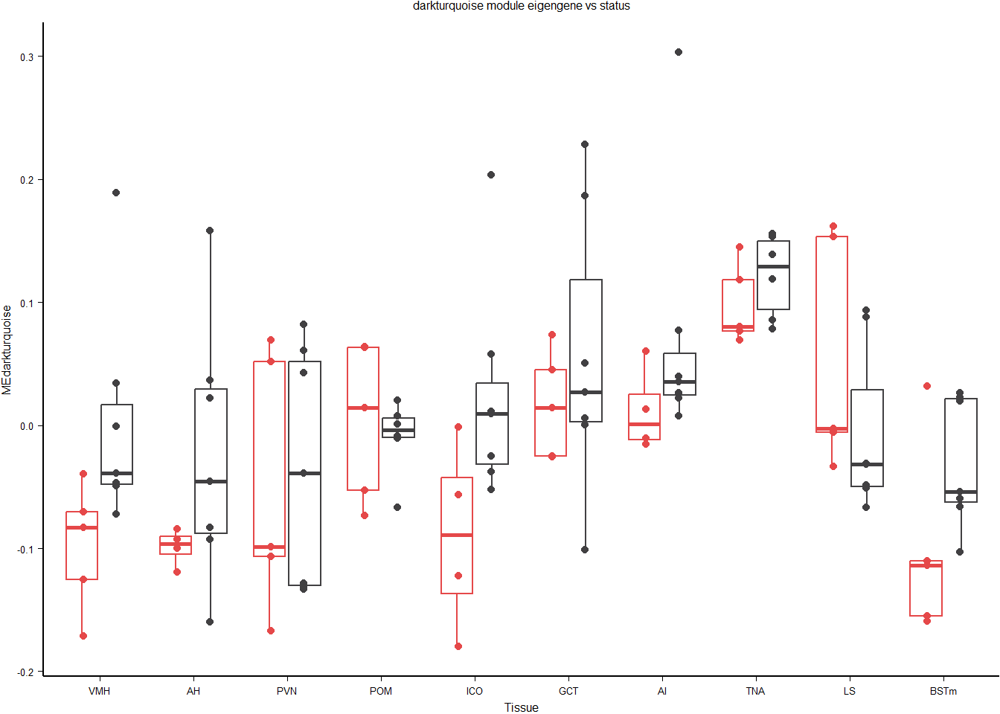
#g<- ggarrange(a,res, labels=LETTERS[1:2], ncol=2)
#ggsave(filename=paste0("../WGCNA_results/all_brain/figure_",whichModule,"_eigengene.png"),plot = g, device="png", height=100, width=80, units="mm", bg="white")
#a<- ggplot() + geom_point(data=mes, aes(x=Tissue, y=MEdarkturquoise, color=status), position=position_dodge(width=0.7),size=0.5) + geom_boxplot(data=mes, aes(x=Tissue, y=MEdarkturquoise, color=status), fill=NA, outlier.colour = NA, linewidth=0.2) + peri_figure + labs(title="darkturquoise module eigengene vs status") + scale_colour_manual(values=status_cols2) + theme(legend.position="none", axis.text.x=element_text(angle=90))
#ggsave(filename=paste0("../WGCNA_results/all_brain/figure_",whichModule,"_ME.pdf"),plot = a, device="pdf", height=38, width=45, units="mm", bg="white")Let’s now plot the top hub gene. This gene is the one with the highest module membership score. UBA52 has a module membership score ~0.9
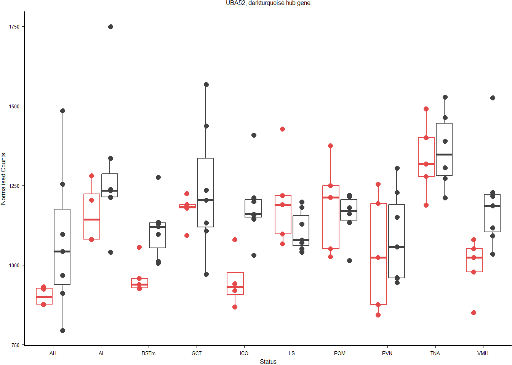
| ID | Description | GeneRatio | BgRatio | pvalue | p.adjust | qvalue | geneID | Count |
|---|---|---|---|---|---|---|---|---|
| GO:0006614 | SRP-dependent cotranslational protein targeting to membrane | 61/200 | 81/11462 | 0 | 0.0e+00 | 0.0e+00 | LOC113987193/LOC113989206/LOC113990217/LOC113998898/RPL10A/RPL11/RPL12/RPL13/RPL14/RPL15/RPL17/RPL18A/RPL19/RPL21/RPL22/RPL23/RPL23A/RPL27/RPL27A/RPL29/RPL30/RPL31/RPL32/RPL34/RPL35/RPL35A/RPL36/RPL37/RPL38/RPL39/RPL4/RPL5/RPL6/RPL7/RPL7A/RPL9/RPLP0/RPLP1/RPLP2/RPS10/RPS12/RPS13/RPS14/RPS15/RPS15A/RPS20/RPS23/RPS25/RPS26/RPS27A/RPS28/RPS29/RPS3/RPS3A/RPS4X/RPS5/RPS6/RPS7/RPS8/RPSA/UBA52 | 61 |
| GO:0019083 | viral transcription | 62/200 | 100/11462 | 0 | 0.0e+00 | 0.0e+00 | GTF2B/LOC113987193/LOC113989206/LOC113990217/LOC113998898/RPL10A/RPL11/RPL12/RPL13/RPL14/RPL15/RPL17/RPL18A/RPL19/RPL21/RPL22/RPL23/RPL23A/RPL27/RPL27A/RPL29/RPL30/RPL31/RPL32/RPL34/RPL35/RPL35A/RPL36/RPL37/RPL38/RPL39/RPL4/RPL5/RPL6/RPL7/RPL7A/RPL9/RPLP0/RPLP1/RPLP2/RPS10/RPS12/RPS13/RPS14/RPS15/RPS15A/RPS20/RPS23/RPS25/RPS26/RPS27A/RPS28/RPS29/RPS3/RPS3A/RPS4X/RPS5/RPS6/RPS7/RPS8/RPSA/UBA52 | 62 |
| GO:0006413 | translational initiation | 65/200 | 117/11462 | 0 | 0.0e+00 | 0.0e+00 | EIF1/EIF2B3/EIF3I/EIF3L/LOC113987193/LOC113989206/LOC113990217/LOC113998898/RPL10A/RPL11/RPL12/RPL13/RPL14/RPL15/RPL17/RPL18A/RPL19/RPL21/RPL22/RPL23/RPL23A/RPL27/RPL27A/RPL29/RPL30/RPL31/RPL32/RPL34/RPL35/RPL35A/RPL36/RPL37/RPL38/RPL39/RPL4/RPL5/RPL6/RPL7/RPL7A/RPL9/RPLP0/RPLP1/RPLP2/RPS10/RPS12/RPS13/RPS14/RPS15/RPS15A/RPS20/RPS23/RPS25/RPS26/RPS27A/RPS28/RPS29/RPS3/RPS3A/RPS4X/RPS5/RPS6/RPS7/RPS8/RPSA/UBA52 | 65 |
| GO:0000184 | nuclear-transcribed mRNA catabolic process, nonsense-mediated decay | 63/200 | 111/11462 | 0 | 0.0e+00 | 0.0e+00 | LOC113987193/LOC113988372/LOC113989206/LOC113990217/LOC113998898/RBM8A/RPL10A/RPL11/RPL12/RPL13/RPL14/RPL15/RPL17/RPL18A/RPL19/RPL21/RPL22/RPL23/RPL23A/RPL27/RPL27A/RPL29/RPL30/RPL31/RPL32/RPL34/RPL35/RPL35A/RPL36/RPL37/RPL38/RPL39/RPL4/RPL5/RPL6/RPL7/RPL7A/RPL9/RPLP0/RPLP1/RPLP2/RPS10/RPS12/RPS13/RPS14/RPS15/RPS15A/RPS20/RPS23/RPS25/RPS26/RPS27A/RPS28/RPS29/RPS3/RPS3A/RPS4X/RPS5/RPS6/RPS7/RPS8/RPSA/UBA52 | 63 |
| GO:0006412 | translation | 63/200 | 148/11462 | 0 | 0.0e+00 | 0.0e+00 | LOC113987193/LOC113989206/LOC113990217/LOC113998898/MRPL18/MRPL43/MRPS14/RPL10A/RPL11/RPL12/RPL13/RPL14/RPL15/RPL17/RPL18A/RPL19/RPL21/RPL22/RPL23/RPL23A/RPL27/RPL27A/RPL29/RPL30/RPL31/RPL32/RPL34/RPL35/RPL35A/RPL36/RPL37/RPL38/RPL39/RPL4/RPL5/RPL6/RPL7/RPL7A/RPL9/RPLP0/RPLP1/RPLP2/RPS10/RPS12/RPS13/RPS14/RPS15/RPS15A/RPS20/RPS23/RPS25/RPS26/RPS27A/RPS28/RPS29/RPS3/RPS3A/RPS4X/RPS5/RPS6/RPS7/RPS8/RPSA | 63 |
| GO:0002181 | cytoplasmic translation | 27/200 | 33/11462 | 0 | 0.0e+00 | 0.0e+00 | LOC113990217/LOC113998898/RPL10A/RPL11/RPL15/RPL17/RPL18A/RPL19/RPL22/RPL26L1/RPL29/RPL30/RPL31/RPL32/RPL35A/RPL36/RPL38/RPL39/RPL6/RPL9/RPLP0/RPLP1/RPS23/RPS26/RPS28/RPS29/RPSA | 27 |
| GO:0006364 | rRNA processing | 19/200 | 135/11462 | 0 | 0.0e+00 | 0.0e+00 | DDX54/EXOSC1/IMP3/LOC113987193/LOC113989206/MRM2/RPL11/RPL14/RPL27/RPL35A/RPL5/RPL7/RPS14/RPS15/RPS25/RPS28/RPS6/RPS7/UTP3 | 19 |
| GO:0000028 | ribosomal small subunit assembly | 7/200 | 14/11462 | 0 | 1.0e-07 | 1.0e-07 | LOC113987193/RPS10/RPS14/RPS15/RPS28/RPS5/RPSA | 7 |
| GO:0042273 | ribosomal large subunit biogenesis | 8/200 | 26/11462 | 0 | 6.0e-07 | 5.0e-07 | NIP7/NPM1/RPL11/RPL14/RPL26L1/RPL35A/RPL5/RPL7 | 8 |
| GO:0042274 | ribosomal small subunit biogenesis | 7/200 | 20/11462 | 0 | 1.7e-06 | 1.6e-06 | LOC113989206/NPM1/RPS15/RPS25/RPS28/RPS6/RPS7 | 7 |


3.0.2 paleturquoise
This module is potentially associated with status.
FALSE Anova Table (Type II tests)
FALSE
FALSE Response: MEpaleturquoise
FALSE Sum Sq Df F value Pr(>F)
FALSE Batch 0.04473 1 8.8557 0.003641 **
FALSE Tissue 0.09618 9 2.1159 0.034552 *
FALSE Status 0.03123 1 6.1828 0.014507 *
FALSE Residuals 0.52023 103
FALSE ---
FALSE Signif. codes: 0 '***' 0.001 '**' 0.01 '*' 0.05 '.' 0.1 ' ' 1FALSE Anova Table (Type III tests)
FALSE
FALSE Response: MEpaleturquoise
FALSE Sum Sq Df F value Pr(>F)
FALSE (Intercept) 0.02458 1 4.8320 0.030391 *
FALSE Batch 0.03703 1 7.2789 0.008271 **
FALSE Tissue 0.08799 9 1.9216 0.058017 .
FALSE Status 0.03334 1 6.5533 0.012064 *
FALSE Tissue:Status 0.04198 9 0.9168 0.514275
FALSE Residuals 0.47825 94
FALSE ---
FALSE Signif. codes: 0 '***' 0.001 '**' 0.01 '*' 0.05 '.' 0.1 ' ' 1FALSE
FALSE Call:
FALSE lm(formula = MEpaleturquoise ~ Batch + Tissue * Status, data = mes,
FALSE contrasts = list(Tissue = contr.sum, Status = contr.sum))
FALSE
FALSE Residuals:
FALSE Min 1Q Median 3Q Max
FALSE -0.189689 -0.031995 0.003197 0.044560 0.120097
FALSE
FALSE Coefficients:
FALSE Estimate Std. Error t value Pr(>|t|)
FALSE (Intercept) -0.033486 0.015234 -2.198 0.03039 *
FALSE Batchrun2 0.071517 0.026508 2.698 0.00827 **
FALSE Tissue1 -0.001447 0.022708 -0.064 0.94934
FALSE Tissue2 0.039602 0.024730 1.601 0.11265
FALSE Tissue3 0.015011 0.023679 0.634 0.52766
FALSE Tissue4 0.008037 0.024600 0.327 0.74463
FALSE Tissue5 -0.043206 0.021116 -2.046 0.04354 *
FALSE Tissue6 -0.021655 0.020388 -1.062 0.29090
FALSE Tissue7 -0.027142 0.025136 -1.080 0.28299
FALSE Tissue8 -0.041810 0.022277 -1.877 0.06364 .
FALSE Tissue9 0.067761 0.023679 2.862 0.00519 **
FALSE Status1 0.017602 0.006876 2.560 0.01206 *
FALSE Tissue1:Status1 0.007276 0.019937 0.365 0.71595
FALSE Tissue2:Status1 0.036683 0.021143 1.735 0.08603 .
FALSE Tissue3:Status1 -0.007150 0.019904 -0.359 0.72023
FALSE Tissue4:Status1 -0.013484 0.020503 -0.658 0.51237
FALSE Tissue5:Status1 0.009704 0.021718 0.447 0.65604
FALSE Tissue6:Status1 0.002213 0.019879 0.111 0.91160
FALSE Tissue7:Status1 -0.002773 0.021143 -0.131 0.89593
FALSE Tissue8:Status1 -0.006396 0.020485 -0.312 0.75555
FALSE Tissue9:Status1 -0.042125 0.019904 -2.116 0.03695 *
FALSE ---
FALSE Signif. codes: 0 '***' 0.001 '**' 0.01 '*' 0.05 '.' 0.1 ' ' 1
FALSE
FALSE Residual standard error: 0.07133 on 94 degrees of freedom
FALSE Multiple R-squared: 0.5218, Adjusted R-squared: 0.42
FALSE F-statistic: 5.128 on 20 and 94 DF, p-value: 2.291e-08FALSE Anova Table (Type III tests)
FALSE
FALSE Response: MEpaleturquoise
FALSE Sum Sq Df F value Pr(>F)
FALSE (Intercept) 0.00120 1 0.2218 0.638718
FALSE Tissue 0.36672 9 7.5122 3.134e-08 ***
FALSE Status 0.04638 1 8.5514 0.004317 **
FALSE Tissue:Status 0.04967 9 1.0176 0.431771
FALSE Residuals 0.51528 95
FALSE ---
FALSE Signif. codes: 0 '***' 0.001 '**' 0.01 '*' 0.05 '.' 0.1 ' ' 1FALSE
FALSE Call:
FALSE lm(formula = MEpaleturquoise ~ Tissue + Status + Tissue:Status,
FALSE data = mes, contrasts = list(Tissue = contr.sum, Status = contr.sum))
FALSE
FALSE Residuals:
FALSE Min 1Q Median 3Q Max
FALSE -0.18969 -0.03528 0.00240 0.04270 0.17118
FALSE
FALSE Coefficients:
FALSE Estimate Std. Error t value Pr(>|t|)
FALSE (Intercept) 0.003303 0.007012 0.471 0.638718
FALSE Tissue1 -0.031084 0.020521 -1.515 0.133158
FALSE Tissue2 0.074331 0.021802 3.409 0.000957 ***
FALSE Tissue3 0.049740 0.020521 2.424 0.017249 *
FALSE Tissue4 -0.028752 0.021141 -1.360 0.177036
FALSE Tissue5 -0.042959 0.021802 -1.970 0.051708 .
FALSE Tissue6 -0.033923 0.020521 -1.653 0.101606
FALSE Tissue7 -0.063931 0.021802 -2.932 0.004216 **
FALSE Tissue8 -0.065488 0.021141 -3.098 0.002565 **
FALSE Tissue9 0.102489 0.020521 4.994 2.68e-06 ***
FALSE Status1 0.020506 0.007012 2.924 0.004317 **
FALSE Tissue1:Status1 0.011525 0.020521 0.562 0.575700
FALSE Tissue2:Status1 0.033779 0.021802 1.549 0.124626
FALSE Tissue3:Status1 -0.010053 0.020521 -0.490 0.625328
FALSE Tissue4:Status1 -0.016387 0.021141 -0.775 0.440177
FALSE Tissue5:Status1 0.023403 0.021802 1.073 0.285810
FALSE Tissue6:Status1 0.003396 0.020521 0.166 0.868898
FALSE Tissue7:Status1 -0.005676 0.021802 -0.260 0.795153
FALSE Tissue8:Status1 -0.008108 0.021141 -0.384 0.702203
FALSE Tissue9:Status1 -0.045028 0.020521 -2.194 0.030654 *
FALSE ---
FALSE Signif. codes: 0 '***' 0.001 '**' 0.01 '*' 0.05 '.' 0.1 ' ' 1
FALSE
FALSE Residual standard error: 0.07365 on 95 degrees of freedom
FALSE Multiple R-squared: 0.4847, Adjusted R-squared: 0.3817
FALSE F-statistic: 4.703 on 19 and 95 DF, p-value: 1.814e-07FALSE Anova Table (Type II tests)
FALSE
FALSE Response: MEpaleturquoise
FALSE Sum Sq Df F value Pr(>F)
FALSE Tissue 0.39150 9 8.0078 6.295e-09 ***
FALSE Status 0.04420 1 8.1367 0.005234 **
FALSE Residuals 0.56496 104
FALSE ---
FALSE Signif. codes: 0 '***' 0.001 '**' 0.01 '*' 0.05 '.' 0.1 ' ' 1
The top hub gene for this module is KCTD5 with a MM score of ~0.95 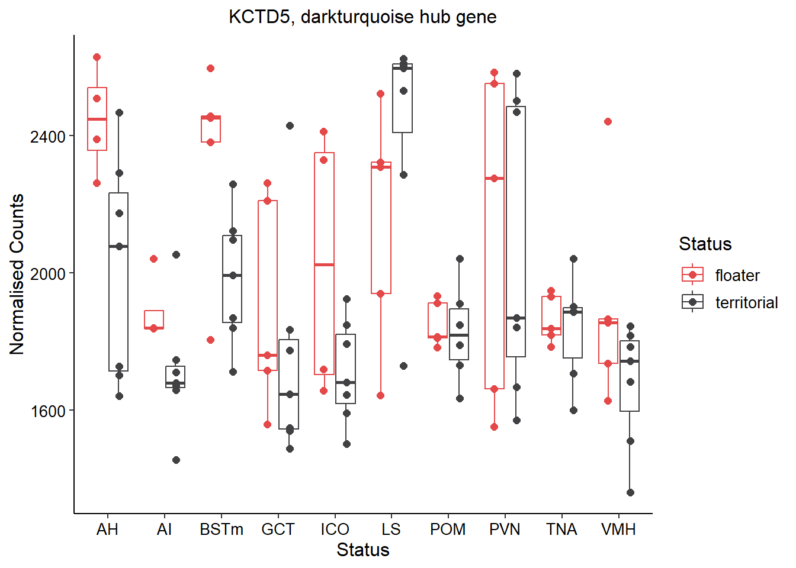
| ID | Description | GeneRatio | BgRatio | pvalue | p.adjust | qvalue | geneID | Count |
|---|---|---|---|---|---|---|---|---|
| GO:0036444 | calcium import into the mitochondrion | 4/571 | 10/11462 | 0.0010059 | 0.6093961 | 0.6025927 | MAIP1/MCUR1/MICU2/MICU3 | 4 |
| GO:0043484 | regulation of RNA splicing | 7/571 | 36/11462 | 0.0017331 | 0.6093961 | 0.6025927 | CELF1/LOC114001870/MBNL2/PTBP2/RBM12/RBM12B/TRA2B | 7 |
| GO:0030148 | sphingolipid biosynthetic process | 8/571 | 48/11462 | 0.0023329 | 0.6093961 | 0.6025927 | ACER3/ELOVL4/HACD2/KDSR/SGMS2/SGPP1/SPTLC1/VAPA | 8 |
| GO:0006376 | mRNA splice site selection | 5/571 | 20/11462 | 0.0025036 | 0.6093961 | 0.6025927 | CELF1/LOC113985802/LOC113985815/PTBP2/SRSF1 | 5 |
| GO:0044257 | cellular protein catabolic process | 4/571 | 13/11462 | 0.0030385 | 0.6093961 | 0.6025927 | CLN8/IDE/RAB12/RIPK1 | 4 |
| GO:0043161 | proteasome-mediated ubiquitin-dependent protein catabolic process | 16/571 | 149/11462 | 0.0030477 | 0.6093961 | 0.6025927 | ATXN3/CLOCK/GID8/KCTD5/NEDD4/NHLRC1/NHLRC3/PPP2R5C/PSMD10/RAD23B/RNF4/SPOPL/TBL1XR1/UBE2D3/UBE2W/USP44 | 16 |
| GO:0006851 | mitochondrial calcium ion transmembrane transport | 5/571 | 23/11462 | 0.0048020 | 0.6093961 | 0.6025927 | LETM1/MAIP1/MCUR1/MICU2/MICU3 | 5 |
| GO:0031398 | positive regulation of protein ubiquitination | 9/571 | 66/11462 | 0.0051892 | 0.6093961 | 0.6025927 | BCL10/CHFR/DERL1/MAPK9/NDFIP2/NHLRC1/PSMD10/TRAF6/UBE2D1 | 9 |
| GO:0002756 | MyD88-independent toll-like receptor signaling pathway | 4/571 | 15/11462 | 0.0053578 | 0.6093961 | 0.6025927 | RIPK1/TLR3/UBE2D1/UBE2D3 | 4 |
| GO:0051560 | mitochondrial calcium ion homeostasis | 4/571 | 16/11462 | 0.0068663 | 0.6093961 | 0.6025927 | LETM1/MAIP1/MICU2/MICU3 | 4 |
3.0.3 honeydew1 module
This module is potentially associated with social network strength. Don’t need batch here because it wasn’t associated with this module.
FALSE Anova Table (Type II tests)
FALSE
FALSE Response: MEhoneydew1
FALSE Sum Sq Df F value Pr(>F)
FALSE Year 0.00588 1 0.7612 0.38498
FALSE Tissue 0.11252 9 1.6174 0.11989
FALSE scale(strength.all_study) 0.02507 1 3.2428 0.07466 .
FALSE Residuals 0.79620 103
FALSE ---
FALSE Signif. codes: 0 '***' 0.001 '**' 0.01 '*' 0.05 '.' 0.1 ' ' 1FALSE Anova Table (Type III tests)
FALSE
FALSE Response: MEhoneydew1
FALSE Sum Sq Df F value Pr(>F)
FALSE (Intercept) 0.00364 1 0.4316 0.5128
FALSE Year 0.00608 1 0.7208 0.3980
FALSE Tissue 0.10946 9 1.4417 0.1817
FALSE scale(strength.all_study) 0.00511 1 0.6055 0.4384
FALSE Tissue:scale(strength.all_study) 0.00319 9 0.0420 1.0000
FALSE Residuals 0.79301 94FALSE
FALSE Call:
FALSE lm(formula = MEhoneydew1 ~ Year + Tissue * scale(strength.all_study),
FALSE data = mes)
FALSE
FALSE Residuals:
FALSE Min 1Q Median 3Q Max
FALSE -0.21613 -0.02369 0.00467 0.04700 0.15303
FALSE
FALSE Coefficients:
FALSE Estimate Std. Error t value Pr(>|t|)
FALSE (Intercept) 0.0187459 0.0285347 0.657 0.5128
FALSE Year2018 -0.0212289 0.0250040 -0.849 0.3980
FALSE TissueAH -0.0242310 0.0384095 -0.631 0.5297
FALSE TissuePVN -0.0206393 0.0375009 -0.550 0.5834
FALSE TissuePOM -0.0101864 0.0384304 -0.265 0.7915
FALSE TissueICO -0.0371755 0.0384430 -0.967 0.3360
FALSE TissueGCT -0.0724391 0.0375009 -1.932 0.0564 .
FALSE TissueAI 0.0500201 0.0390097 1.282 0.2029
FALSE TissueTNA 0.0110174 0.0383814 0.287 0.7747
FALSE TissueLS 0.0154758 0.0375009 0.413 0.6808
FALSE TissueBSTm -0.0077801 0.0375009 -0.207 0.8361
FALSE scale(strength.all_study) 0.0215393 0.0276810 0.778 0.4384
FALSE TissueAH:scale(strength.all_study) -0.0041436 0.0374795 -0.111 0.9122
FALSE TissuePVN:scale(strength.all_study) 0.0033188 0.0371918 0.089 0.9291
FALSE TissuePOM:scale(strength.all_study) -0.0125190 0.0384790 -0.325 0.7456
FALSE TissueICO:scale(strength.all_study) 0.0052359 0.0379768 0.138 0.8906
FALSE TissueGCT:scale(strength.all_study) -0.0030444 0.0371918 -0.082 0.9349
FALSE TissueAI:scale(strength.all_study) -0.0039698 0.0448166 -0.089 0.9296
FALSE TissueTNA:scale(strength.all_study) -0.0008582 0.0372995 -0.023 0.9817
FALSE TissueLS:scale(strength.all_study) 0.0023813 0.0371918 0.064 0.9491
FALSE TissueBSTm:scale(strength.all_study) 0.0069860 0.0371918 0.188 0.8514
FALSE ---
FALSE Signif. codes: 0 '***' 0.001 '**' 0.01 '*' 0.05 '.' 0.1 ' ' 1
FALSE
FALSE Residual standard error: 0.09185 on 94 degrees of freedom
FALSE Multiple R-squared: 0.207, Adjusted R-squared: 0.03827
FALSE F-statistic: 1.227 on 20 and 94 DF, p-value: 0.2508FALSE Anova Table (Type III tests)
FALSE
FALSE Response: MEhoneydew1
FALSE Sum Sq Df F value Pr(>F)
FALSE (Intercept) 0.00115 1 0.1369 0.7122
FALSE Tissue 0.11078 9 1.4633 0.1729
FALSE scale(strength.all_study) 0.01017 1 1.2090 0.2743
FALSE Tissue:scale(strength.all_study) 0.00299 9 0.0396 1.0000
FALSE Residuals 0.79909 95FALSE
FALSE Call:
FALSE lm(formula = MEhoneydew1 ~ Tissue + scale(strength.all_study) +
FALSE Tissue:scale(strength.all_study), data = mes)
FALSE
FALSE Residuals:
FALSE Min 1Q Median 3Q Max
FALSE -0.209145 -0.030023 0.008395 0.040887 0.165932
FALSE
FALSE Coefficients:
FALSE Estimate Std. Error t value Pr(>|t|)
FALSE (Intercept) 0.0097981 0.0264781 0.370 0.712
FALSE TissueAH -0.0254616 0.0383257 -0.664 0.508
FALSE TissuePVN -0.0206393 0.0374457 -0.551 0.583
FALSE TissuePOM -0.0102098 0.0383739 -0.266 0.791
FALSE TissueICO -0.0366235 0.0383809 -0.954 0.342
FALSE TissueGCT -0.0724391 0.0374457 -1.935 0.056 .
FALSE TissueAI 0.0513413 0.0389213 1.319 0.190
FALSE TissueTNA 0.0099604 0.0383048 0.260 0.795
FALSE TissueLS 0.0154758 0.0374457 0.413 0.680
FALSE TissueBSTm -0.0077801 0.0374457 -0.208 0.836
FALSE scale(strength.all_study) 0.0288735 0.0262599 1.100 0.274
FALSE TissueAH:scale(strength.all_study) -0.0034568 0.0374157 -0.092 0.927
FALSE TissuePVN:scale(strength.all_study) 0.0033188 0.0371371 0.089 0.929
FALSE TissuePOM:scale(strength.all_study) -0.0125464 0.0384224 -0.327 0.745
FALSE TissueICO:scale(strength.all_study) 0.0047346 0.0379164 0.125 0.901
FALSE TissueGCT:scale(strength.all_study) -0.0030444 0.0371371 -0.082 0.935
FALSE TissueAI:scale(strength.all_study) -0.0008949 0.0446044 -0.020 0.984
FALSE TissueTNA:scale(strength.all_study) -0.0004918 0.0372422 -0.013 0.989
FALSE TissueLS:scale(strength.all_study) 0.0023813 0.0371371 0.064 0.949
FALSE TissueBSTm:scale(strength.all_study) 0.0069860 0.0371371 0.188 0.851
FALSE ---
FALSE Signif. codes: 0 '***' 0.001 '**' 0.01 '*' 0.05 '.' 0.1 ' ' 1
FALSE
FALSE Residual standard error: 0.09171 on 95 degrees of freedom
FALSE Multiple R-squared: 0.2009, Adjusted R-squared: 0.04109
FALSE F-statistic: 1.257 on 19 and 95 DF, p-value: 0.231FALSE Anova Table (Type II tests)
FALSE
FALSE Response: MEhoneydew1
FALSE Sum Sq Df F value Pr(>F)
FALSE Tissue 0.11321 9 1.631 0.1159238
FALSE scale(strength.all_study) 0.09354 1 12.128 0.0007278 ***
FALSE Residuals 0.80209 104
FALSE ---
FALSE Signif. codes: 0 '***' 0.001 '**' 0.01 '*' 0.05 '.' 0.1 ' ' 1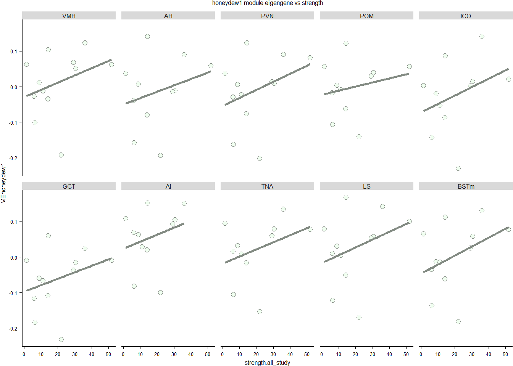
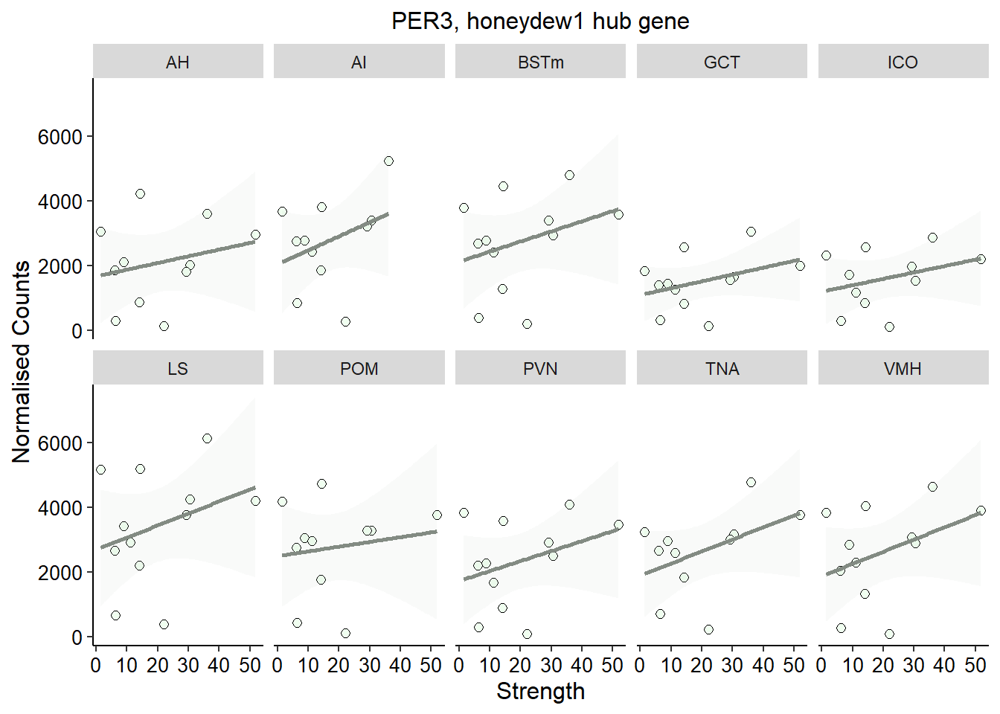
Not significant after controlling for batch, tissue and indivdual as a random effect.
| ID | Description | GeneRatio | BgRatio | pvalue | p.adjust | qvalue | geneID | Count |
|---|---|---|---|---|---|---|---|---|
| GO:0032922 | circadian regulation of gene expression | 4/42 | 68/11462 | 0.0001070 | 0.0168006 | 0.0117148 | CIART/NR1D1/PER2/PER3 | 4 |
| GO:0005978 | glycogen biosynthetic process | 2/42 | 14/11462 | 0.0011600 | 0.0504229 | 0.0351591 | NR1D1/PER2 | 2 |
| GO:0007623 | circadian rhythm | 3/42 | 59/11462 | 0.0012896 | 0.0504229 | 0.0351591 | LOC114003929/NR1D1/PER2 | 3 |
| GO:0042752 | regulation of circadian rhythm | 3/42 | 61/11462 | 0.0014204 | 0.0504229 | 0.0351591 | NR1D1/NR1D2/PER2 | 3 |
| GO:0048024 | regulation of mRNA splicing, via spliceosome | 2/42 | 18/11462 | 0.0019323 | 0.0504229 | 0.0351591 | KHDRBS1/SRSF3 | 2 |
| GO:0006090 | pyruvate metabolic process | 2/42 | 19/11462 | 0.0021547 | 0.0504229 | 0.0351591 | LOC113983410/LOC113990030 | 2 |
| GO:0043153 | entrainment of circadian clock by photoperiod | 2/42 | 20/11462 | 0.0023885 | 0.0504229 | 0.0351591 | PER2/PER3 | 2 |
| GO:0008652 | cellular amino acid biosynthetic process | 2/42 | 21/11462 | 0.0026338 | 0.0504229 | 0.0351591 | KYAT1/PYCR1 | 2 |
| GO:0006783 | heme biosynthetic process | 2/42 | 22/11462 | 0.0028905 | 0.0504229 | 0.0351591 | LOC113982573/UROS | 2 |
| GO:0009060 | aerobic respiration | 2/42 | 25/11462 | 0.0037279 | 0.0532067 | 0.0371002 | LOC113983410/LOC113990030 | 2 |
3.0.4 darkorange2
FALSE Anova Table (Type II tests)
FALSE
FALSE Response: MEdarkorange2
FALSE Sum Sq Df F value Pr(>F)
FALSE Year 0.00975 1 1.5311 0.2187535
FALSE Tissue 0.20752 9 3.6223 0.0005867 ***
FALSE scale(strength.all_study) 0.03385 1 5.3184 0.0231039 *
FALSE Residuals 0.65564 103
FALSE ---
FALSE Signif. codes: 0 '***' 0.001 '**' 0.01 '*' 0.05 '.' 0.1 ' ' 1FALSE Anova Table (Type III tests)
FALSE
FALSE Response: MEdarkorange2
FALSE Sum Sq Df F value Pr(>F)
FALSE (Intercept) 0.00443 1 0.6449 0.423976
FALSE Year 0.00941 1 1.3688 0.244978
FALSE Tissue 0.20742 9 3.3531 0.001339 **
FALSE scale(strength.all_study) 0.01073 1 1.5606 0.214679
FALSE Tissue:scale(strength.all_study) 0.00954 9 0.1542 0.997645
FALSE Residuals 0.64610 94
FALSE ---
FALSE Signif. codes: 0 '***' 0.001 '**' 0.01 '*' 0.05 '.' 0.1 ' ' 1FALSE
FALSE Call:
FALSE lm(formula = MEdarkorange2 ~ Year + Tissue * scale(strength.all_study),
FALSE data = mes)
FALSE
FALSE Residuals:
FALSE Min 1Q Median 3Q Max
FALSE -0.144604 -0.053316 -0.000851 0.047907 0.241264
FALSE
FALSE Coefficients:
FALSE Estimate Std. Error t value Pr(>|t|)
FALSE (Intercept) 0.0206833 0.0257562 0.803 0.4240
FALSE Year2018 0.0264051 0.0225694 1.170 0.2450
FALSE TissueAH -0.0516874 0.0346696 -1.491 0.1393
FALSE TissuePVN 0.0172869 0.0338494 0.511 0.6108
FALSE TissuePOM 0.0098605 0.0346884 0.284 0.7768
FALSE TissueICO 0.0042670 0.0346998 0.123 0.9024
FALSE TissueGCT 0.0094744 0.0338494 0.280 0.7802
FALSE TissueAI -0.0876757 0.0352113 -2.490 0.0145 *
FALSE TissueTNA -0.0465449 0.0346442 -1.344 0.1823
FALSE TissueLS -0.0929944 0.0338494 -2.747 0.0072 **
FALSE TissueBSTm -0.0809117 0.0338494 -2.390 0.0188 *
FALSE scale(strength.all_study) -0.0312132 0.0249857 -1.249 0.2147
FALSE TissueAH:scale(strength.all_study) 0.0067419 0.0338302 0.199 0.8425
FALSE TissuePVN:scale(strength.all_study) -0.0060643 0.0335705 -0.181 0.8570
FALSE TissuePOM:scale(strength.all_study) 0.0236760 0.0347323 0.682 0.4971
FALSE TissueICO:scale(strength.all_study) 0.0087445 0.0342790 0.255 0.7992
FALSE TissueGCT:scale(strength.all_study) -0.0002642 0.0335705 -0.008 0.9937
FALSE TissueAI:scale(strength.all_study) 0.0045006 0.0404529 0.111 0.9117
FALSE TissueTNA:scale(strength.all_study) -0.0035565 0.0336677 -0.106 0.9161
FALSE TissueLS:scale(strength.all_study) 0.0180131 0.0335705 0.537 0.5928
FALSE TissueBSTm:scale(strength.all_study) 0.0127069 0.0335705 0.379 0.7059
FALSE ---
FALSE Signif. codes: 0 '***' 0.001 '**' 0.01 '*' 0.05 '.' 0.1 ' ' 1
FALSE
FALSE Residual standard error: 0.08291 on 94 degrees of freedom
FALSE Multiple R-squared: 0.3539, Adjusted R-squared: 0.2164
FALSE F-statistic: 2.574 on 20 and 94 DF, p-value: 0.001183FALSE
FALSE Call:
FALSE lm(formula = MEdarkorange2 ~ Tissue + scale(strength.all_study) +
FALSE Tissue:scale(strength.all_study), data = mes)
FALSE
FALSE Residuals:
FALSE Min 1Q Median 3Q Max
FALSE -0.14566 -0.04763 0.00457 0.04900 0.23445
FALSE
FALSE Coefficients:
FALSE Estimate Std. Error t value Pr(>|t|)
FALSE (Intercept) 0.0318128 0.0239816 1.327 0.1878
FALSE TissueAH -0.0501567 0.0347121 -1.445 0.1518
FALSE TissuePVN 0.0172869 0.0339151 0.510 0.6114
FALSE TissuePOM 0.0098895 0.0347557 0.285 0.7766
FALSE TissueICO 0.0035804 0.0347621 0.103 0.9182
FALSE TissueGCT 0.0094744 0.0339151 0.279 0.7806
FALSE TissueAI -0.0893190 0.0352515 -2.534 0.0129 *
FALSE TissueTNA -0.0452301 0.0346931 -1.304 0.1955
FALSE TissueLS -0.0929944 0.0339151 -2.742 0.0073 **
FALSE TissueBSTm -0.0809117 0.0339151 -2.386 0.0190 *
FALSE scale(strength.all_study) -0.0403356 0.0237839 -1.696 0.0932 .
FALSE TissueAH:scale(strength.all_study) 0.0058876 0.0338879 0.174 0.8624
FALSE TissuePVN:scale(strength.all_study) -0.0060643 0.0336355 -0.180 0.8573
FALSE TissuePOM:scale(strength.all_study) 0.0237101 0.0347996 0.681 0.4973
FALSE TissueICO:scale(strength.all_study) 0.0093680 0.0343414 0.273 0.7856
FALSE TissueGCT:scale(strength.all_study) -0.0002642 0.0336355 -0.008 0.9937
FALSE TissueAI:scale(strength.all_study) 0.0006761 0.0403987 0.017 0.9867
FALSE TissueTNA:scale(strength.all_study) -0.0040121 0.0337307 -0.119 0.9056
FALSE TissueLS:scale(strength.all_study) 0.0180131 0.0336355 0.536 0.5935
FALSE TissueBSTm:scale(strength.all_study) 0.0127069 0.0336355 0.378 0.7064
FALSE ---
FALSE Signif. codes: 0 '***' 0.001 '**' 0.01 '*' 0.05 '.' 0.1 ' ' 1
FALSE
FALSE Residual standard error: 0.08307 on 95 degrees of freedom
FALSE Multiple R-squared: 0.3445, Adjusted R-squared: 0.2134
FALSE F-statistic: 2.628 on 19 and 95 DF, p-value: 0.001098FALSE Anova Table (Type II tests)
FALSE
FALSE Response: MEdarkorange2
FALSE Sum Sq Df F value Pr(>F)
FALSE Tissue 0.20717 9 3.5979 0.0006209 ***
FALSE scale(strength.all_study) 0.13342 1 20.8531 1.366e-05 ***
FALSE Residuals 0.66538 104
FALSE ---
FALSE Signif. codes: 0 '***' 0.001 '**' 0.01 '*' 0.05 '.' 0.1 ' ' 1FALSE # Effect Size for ANOVA (Type II)
FALSE
FALSE Parameter | Eta2 (partial) | 95% CI
FALSE ---------------------------------------------------------
FALSE Year | 0.01 | [0.00, 1.00]
FALSE Tissue | 0.24 | [0.08, 1.00]
FALSE scale(strength.all_study) | 0.05 | [0.00, 1.00]
FALSE
FALSE - One-sided CIs: upper bound fixed at [1.00].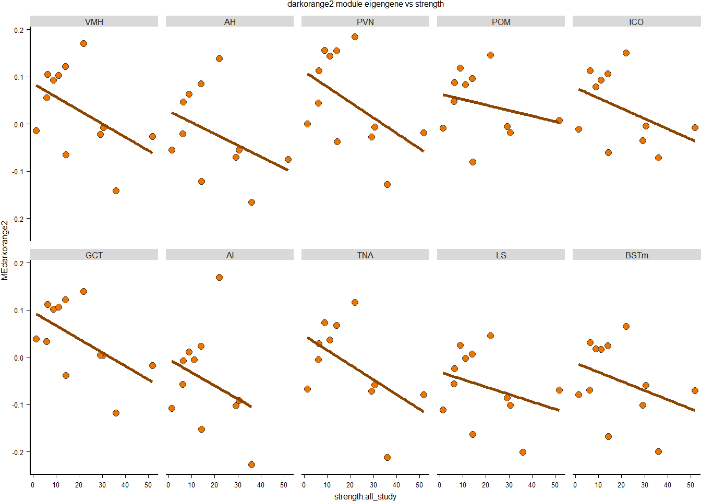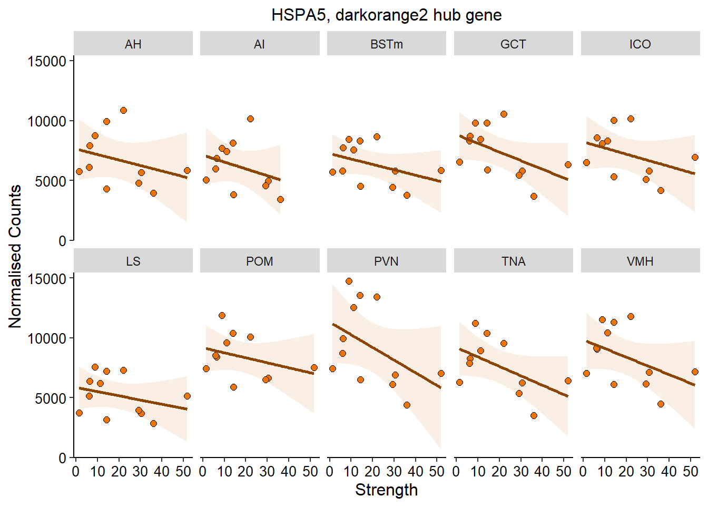
| ID | Description | GeneRatio | BgRatio | pvalue | p.adjust | qvalue | geneID | Count |
|---|---|---|---|---|---|---|---|---|
| GO:0006457 | protein folding | 14/74 | 129/11462 | 0.0e+00 | 0.00e+00 | 0.00e+00 | AHSA1/CALR/CCT3/CCT5/CCT6A/DNAJB6/HSP90AA1/HSP90B1/HSPA8/LOC113994013/PDIA4/PDIA6/PTGES3/TCP1 | 14 |
| GO:1904851 | positive regulation of establishment of protein localization to telomere | 6/74 | 11/11462 | 0.0e+00 | 0.00e+00 | 0.00e+00 | CCT3/CCT5/CCT6A/LOC113994013/TCP1/WRAP53 | 6 |
| GO:1904871 | positive regulation of protein localization to Cajal body | 5/74 | 12/11462 | 0.0e+00 | 9.00e-07 | 8.00e-07 | CCT3/CCT5/CCT6A/LOC113994013/TCP1 | 5 |
| GO:0042026 | protein refolding | 5/74 | 16/11462 | 0.0e+00 | 3.00e-06 | 2.70e-06 | DNAJA4/HSP90AA1/HSPA2/HSPA5/HSPA8 | 5 |
| GO:1904874 | positive regulation of telomerase RNA localization to Cajal body | 5/74 | 16/11462 | 0.0e+00 | 3.00e-06 | 2.70e-06 | CCT3/CCT5/CCT6A/LOC113994013/TCP1 | 5 |
| GO:0006986 | response to unfolded protein | 6/74 | 33/11462 | 1.0e-07 | 3.50e-06 | 3.20e-06 | HERPUD1/HSP90AA1/HSPA2/HSPA4/HSPA8/MANF | 6 |
| GO:0051973 | positive regulation of telomerase activity | 5/74 | 29/11462 | 1.0e-06 | 4.56e-05 | 4.13e-05 | HSP90AA1/LOC113994013/PTGES3/TCP1/WRAP53 | 5 |
| GO:0007339 | binding of sperm to zona pellucida | 4/74 | 13/11462 | 1.1e-06 | 4.56e-05 | 4.13e-05 | CCT3/CCT5/LOC113994013/TCP1 | 4 |
| GO:0032212 | positive regulation of telomere maintenance via telomerase | 5/74 | 30/11462 | 1.2e-06 | 4.56e-05 | 4.13e-05 | CCT3/CCT5/CCT6A/LOC113994013/TCP1 | 5 |
| GO:1901998 | toxin transport | 5/74 | 30/11462 | 1.2e-06 | 4.56e-05 | 4.13e-05 | CCT3/CCT5/HSPA5/LOC113994013/TCP1 | 5 |


3.1 GO for modules
4 Module Connectivity
FALSE Flagging genes and samples with too many missing values...
FALSE ..step 1FALSE [1] TRUEFALSE Power SFT.R.sq slope truncated.R.sq mean.k. median.k. max.k.
FALSE 1 1 0.0126 33.80 0.961 6810.00 6810.00 6880
FALSE 2 2 0.1560 -9.21 0.878 3730.00 3730.00 4140
FALSE 3 3 0.1170 -2.41 0.898 2200.00 2180.00 2770
FALSE 4 4 0.2180 -1.99 0.934 1370.00 1350.00 2020
FALSE 5 5 0.3350 -1.86 0.951 896.00 872.00 1550
FALSE 6 6 0.4460 -1.77 0.968 609.00 582.00 1230
FALSE 7 7 0.5430 -1.77 0.974 427.00 399.00 1010
FALSE 8 8 0.6150 -1.77 0.976 309.00 280.00 841
FALSE 9 9 0.6690 -1.79 0.980 228.00 200.00 714
FALSE 10 10 0.7100 -1.83 0.976 173.00 146.00 614
FALSE 11 11 0.7480 -1.85 0.980 133.00 108.00 534
FALSE 12 12 0.7800 -1.86 0.984 104.00 80.70 469
FALSE 13 14 0.8190 -1.88 0.987 66.40 46.60 370
FALSE 14 16 0.8410 -1.91 0.987 44.40 28.00 299
FALSE 15 18 0.8530 -1.93 0.988 30.80 17.30 247
FALSE 16 20 0.8600 -1.95 0.987 22.10 11.00 207
FALSE 17 22 0.8720 -1.93 0.988 16.30 7.15 176
FALSE 18 24 0.8810 -1.92 0.991 12.20 4.73 151
FALSE 19 26 0.8830 -1.91 0.990 9.39 3.19 131
FALSE 20 28 0.8860 -1.91 0.989 7.32 2.19 115
FALSE 21 30 0.8810 -1.91 0.988 5.80 1.52 101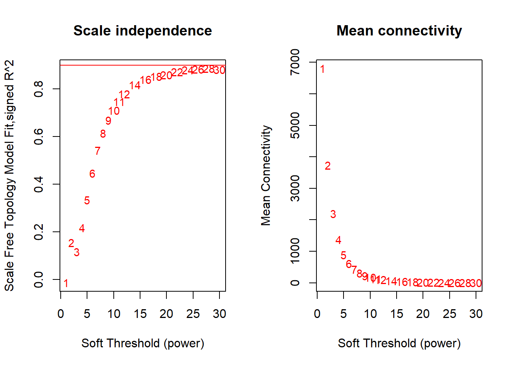
FALSE Flagging genes and samples with too many missing values...
FALSE ..step 1FALSE [1] TRUEFALSE Power SFT.R.sq slope truncated.R.sq mean.k. median.k. max.k.
FALSE 1 1 0.04720 49.600 0.944 6810.00 6810.00 6880
FALSE 2 2 0.02060 -2.970 0.882 3760.00 3750.00 4170
FALSE 3 3 0.00267 -0.382 0.867 2240.00 2220.00 2830
FALSE 4 4 0.04100 -0.885 0.901 1410.00 1390.00 2080
FALSE 5 5 0.13700 -1.150 0.936 936.00 913.00 1620
FALSE 6 6 0.28700 -1.350 0.964 644.00 619.00 1300
FALSE 7 7 0.43900 -1.470 0.980 458.00 432.00 1070
FALSE 8 8 0.56100 -1.560 0.989 335.00 308.00 894
FALSE 9 9 0.64400 -1.640 0.987 251.00 224.00 761
FALSE 10 10 0.70900 -1.710 0.987 192.00 166.00 657
FALSE 11 11 0.75100 -1.750 0.985 149.00 125.00 572
FALSE 12 12 0.78300 -1.780 0.985 118.00 94.80 503
FALSE 13 14 0.83700 -1.820 0.994 76.40 56.60 400
FALSE 14 16 0.86200 -1.840 0.993 51.90 35.30 325
FALSE 15 18 0.87800 -1.870 0.992 36.50 22.60 269
FALSE 16 20 0.87300 -1.910 0.984 26.50 14.70 227
FALSE 17 22 0.88300 -1.910 0.986 19.70 9.83 193
FALSE 18 24 0.89400 -1.900 0.988 15.00 6.71 166
FALSE 19 26 0.90100 -1.890 0.990 11.60 4.65 145
FALSE 20 28 0.90800 -1.880 0.991 9.11 3.26 127
FALSE 21 30 0.90600 -1.870 0.987 7.27 2.32 112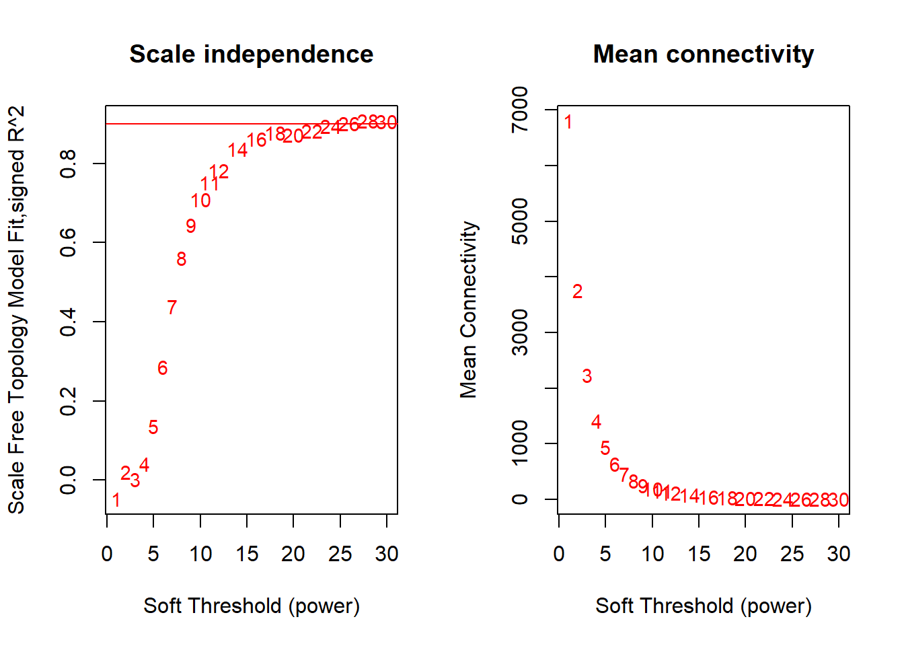
FALSE [1] TRUEFALSE [1] TRUE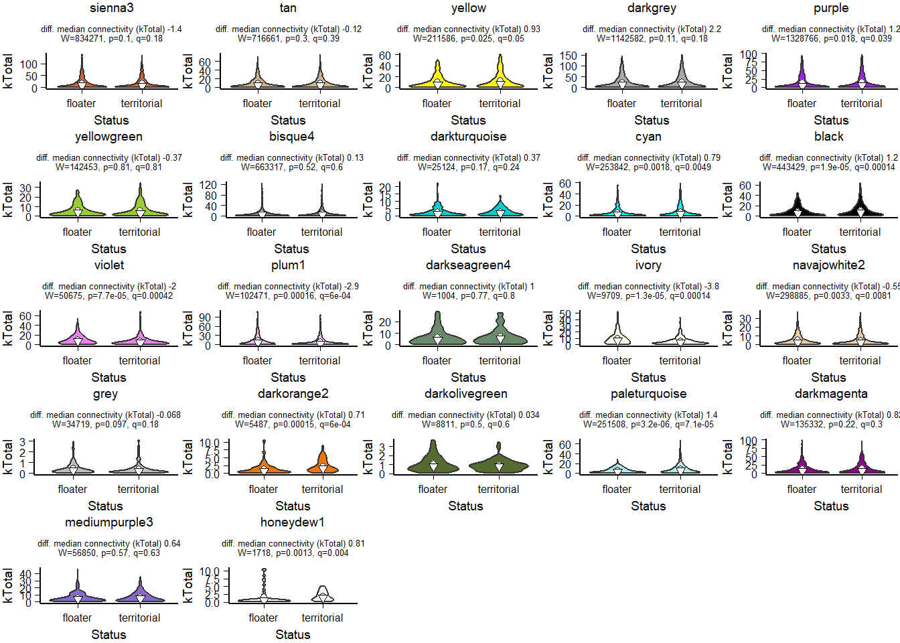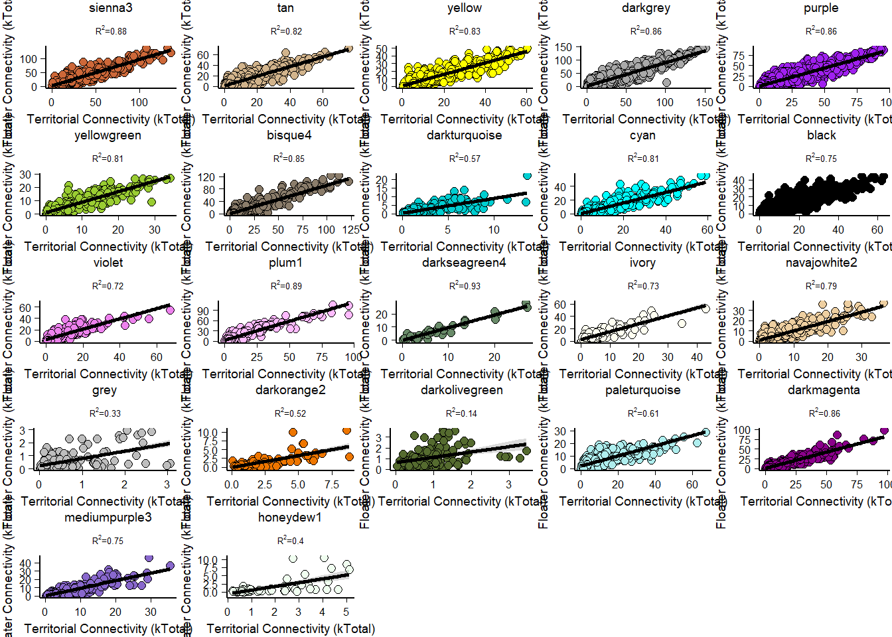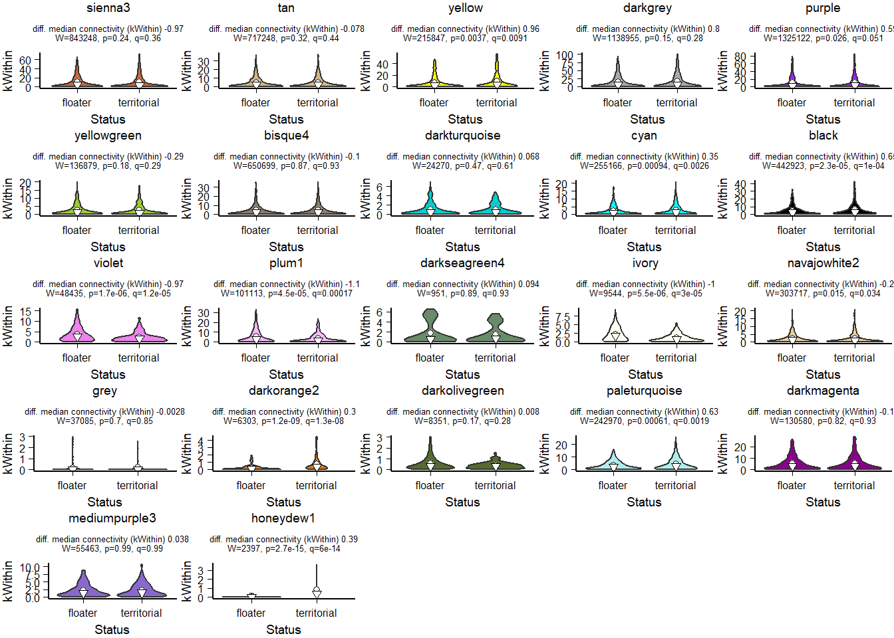
How does module size influence connectivity?
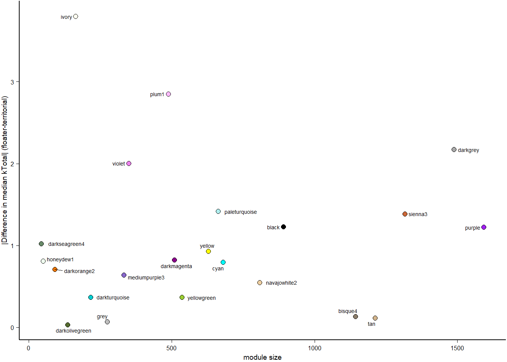
5 Module Preservation
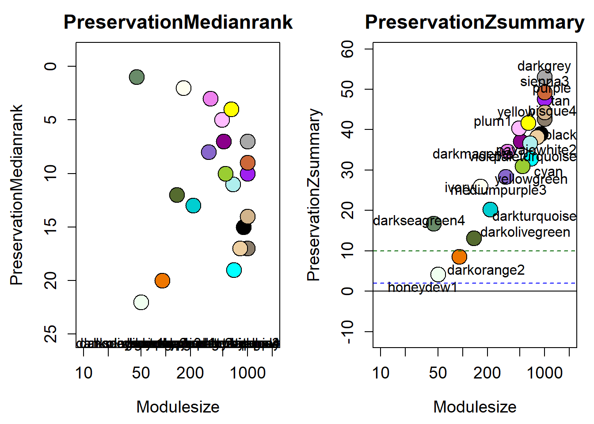